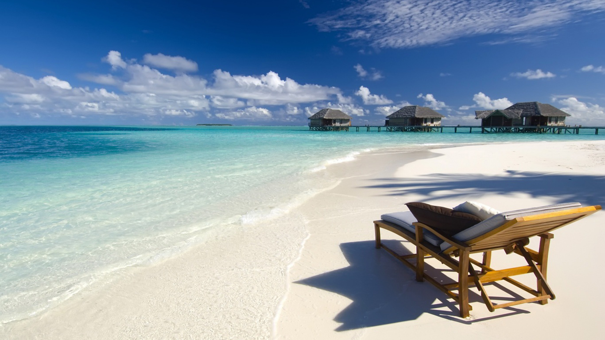
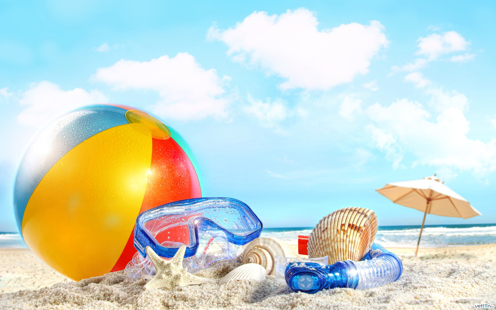

Пляжные Туры
Море + цивилизация
Совместить плескания в солёной воде с прелестями цивилизованной жизни можно в добром десятке европейских стран. Популярные направления — Италия, Испания, Португалия, Греция, Кипр, Франция. Преимущества такого сочетания: возможность вдоволь «пошопиться» и разнообразить походы на пляж созерцанием достопримечательностей мирового масштаба, типа Колизея и Парфенона. Вдобавок можно выбрать замечательные пляжи прямо в черте города, как например, в Барселоне или Ницце.
Море + экзотика
Если у вас щемит сердце при виде открыточного изгиба пальмы над лазурной водной гладью, ваш выбор — экзотические моря и океаны: любимый нами (и основательно исхоженный русскими туристами) Таиланд, Маврикий, Кабо-Верде, Сейшеллы и Мальдивы, Доминикана, Индия и ЮАР. Плюсы очевидны: богатая и удивительная в своей непохожести природа, размеренный ритм жизни, вкусная и натуральная еда и возможность отдохнуть от вездесущих интернета-журналов-телевидения. Кстати, перечисленные направления вовсе не так дороги, как может показаться на первый взгляд.
Море + цивилизованная экзотика
Золотая середина — мечети и офисные центры, современные магазины и совсем близкая пустыня — вот «фишки» Турции и Египта, ОАЭ, Туниса, Марокко, Омана и прочих арабских стран с колонизацией в прошлом. Восток, кивающий в сторону Запад — так можно определить их характер. К тому же это одни из самых популярных пляжных стран, предлагающих возможности для отдыха на любой вкус и кошелёк — от роскошных отелей Дубая до скромных «трёшек» Сусса. «Экскурсионка», кстати, тут побогаче, чем на некоторых европейских направлениях: к руинам великих империй прошлого здесь добавляются шедевры колониальной архитектуры и потрясающие природные красоты.
Море + романтика
Уединение — вот главное условие романтического отдыха на море. Поэтому в категорию «море + романтика» определённо не могут быть включены шумные курорты типа Хургады. Хотя практически в каждой пляжной стране найдётся уединённое местечко для влюблённых, предпочтение, как правило, отдаётся отдалённой и неизбитой экзотике: например, Австралии, Мозамбику, странам Латинской Америки и аборигенным океаническим островам. Упомянем здесь о дивных отелях бунгального типа, стоящих на сваях в бирюзовой воде, и прочих бонусах в виде коралловых рифов, стаек разноцветных морских обитателей и расхаживающих по берегу пеликанах.
Море + что-то родное
Поплавать в море, чувствуя себя как дома — девиз наших ближайших соседей и бывших товарищей по соцблоку: Болгарии, Хорватии, Румынии, Словении и Черногории. Сюда же отнесём совсем родную Украину, в прибрежных водах которой почти гарантированно барахтался каждый россиянин. Преимуществ масса: близкий перелёт и отсутствие проблем общения, знакомая кухня и уклад быта, наконец — чувство локтя и особое, славянское, гостеприимство. Отдельная армия поклонников «родных морей» — нелюбители тропической жары и утомительных путешествий к месту отдыха.
Море ради моря
«Море как достопримечательность» — так можно охарактеризовать водные просторы Израиля и Иордании (Мёртвое море), Египта (Красное море) и Австралии (Коралловое море). Здешние водоёмы привлекают туристов уже одним фактом своего существования. Где ещё можно перелистывать страницы любимой книги, комфортно возлежа на морской глади, исследовать целые подводные коралловые города или совершать погружения в одну из самых глубоких океанских впадин мира.